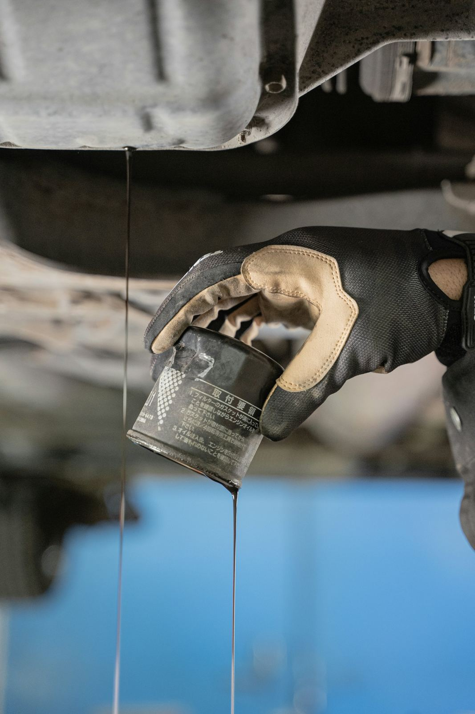

La bonne pièce,
du premier coup.
Pièces détachées d'origine pour Toyota, Nissan, Mitsubishi, Hyundai, Kia et toutes les marques japonaises et coréennes. Donnez-nous le numéro de châssis, on s'occupe du reste.
Toutes les familles de pièces

Filtration
Filtre à huile · Filtre à air · Filtre à gasoil…

Freinage
Plaquettes · Disques · Mâchoires…

Suspension et direction
Amortisseurs · Rotules · Silentblocs…

Moteur et distribution
Kits de distribution · Courroies · Joints de culasse…

Allumage et électricité
Bougies · Bobines · Alternateurs…

Embrayage et transmission
Kits d'embrayage · Butées · Cardans…
L'origine, ça se voit sur la route
Pièces d'origine
La qualité constructeur, garantie, pour durer.
Bonne référence
Recherche par numéro de châssis : zéro erreur de pièce.
Stock à Glass
Les pièces d'entretien courantes disponibles tout de suite.
Sur commande
Le reste commandé pour vous, avec un délai annoncé.

Huiles moteurs et industrielles
Huiles moteur essence et diesel, boîtes, ponts, fluides et huiles industrielles, du litre au fût de 208 litres.
Voir les lubrifiants →Avis clients
« Avec le numéro de châssis, ils ont trouvé la bonne référence du premier coup. Pièce d'origine, prix correct. »
« Commande passée sur WhatsApp le matin, pièce récupérée l'après-midi. Très pratique. »
« Nous équipons nos pick-up chez eux depuis des années : stock, conseil et facture en règle. »
Vous cherchez une pièce ?
Envoyez le numéro de châssis (sur la carte grise) : on vous donne la bonne référence, le prix et le délai.